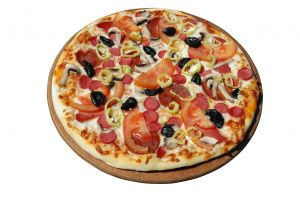
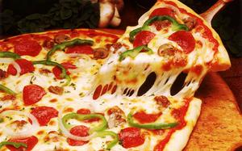

A Pacman Pizza 10 éve alapította meg első pizzériáját, azóta már 7 pizzériánk is várja az éhes vendégseregletet.
Állásajánlat
Ha szeretnél csapatunk tevékeny tagja lenni és rendelkezel is munkatapasztalattal, akkor ne habozz és küldj önéletrajzot.
Jelenleg teljes munkaidőbe keresünk:
2 fő szakácsot
1 fő motoros futárt

A pizza története

A pizza világszerte napjaink egyik legkedveltebb étele. Maga a pizza szó az olasz "picea" szóból ered, melyet a rómaiak a kenyér kemencében sütésének leírására használtak. A pizzát Vergilius Aenisában említik először, de a Cato (kr.e 209-149) által írt Róma történetében is felbukkan egy "lapos kelt tészta, melyet olívaolajjal, fűszerekkel és mézzel édesítenek, és köveken sütnek meg". A kr.u. 79-ben "elpusztult" Pompei maradványai között a régészek olyan üzleteket tártak fel, amelyek a mai modern pizzériák elődeinek tekinthetők. Ezek a pizzák azonban még különbözőek voltak a ma ismert pizzától.
Eredetileg a pizza kenyértésztából gömbölyített, lapított, különböző zöldségekkel megrakott lángos volt. A 18. századtól használtak paradicsomot a pizza elkészítéséhez. Ez főleg Nápoly szegénynegyedeiben volt divatos. A pizza Nápoly igazi turistalátványossága lett. A Nápolyba látogatók elzarándokoltak a város szegénynegyedeibe, hogy kipróbálják a helyi specialitást. A modern pizza feltalálását nápolyi Raffaele Espositónak tulajdonítják, aki az 1780-ban alapított és ma Pizzeria Brandi néven még mindig működő Pietro e basta cosi sütödében dolgozott. 1830-ig a pizzákat nyitott standokon árulták, és utcai árusok kínáltak őket. Az első mai értelemben vett pizzéria 1830 környékén nyílt meg Nápolyban, a neve Pizzeria Port'Alba volt. Ekkor a pizza volt az egyetlen étel Nápolyban, amihez a szegény emberek hozzájutottak télvíz idején.